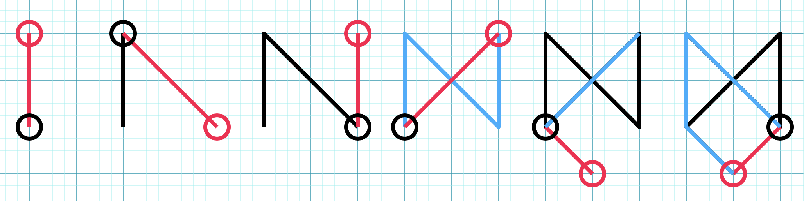

Sorcerer Snow is painting some sigils to use for... reasons. (They may or may not be for performance enhancement on future Codeforces contests, but eh, we'll never know.)
Snow has several sigil blueprints that describe how to paint each sigil. With each blueprint, there is a sequence of line segments that must be painted in order. In addition, the entire sigil must be painted in one stroke without removing the brush from the parchment, which may require Snow to backtrack through previously painted edges to complete the sigil. When backtracking, Snow must retrace entire line segments previously drawn.
It's at this point when Snow realizes he has ran out of ink to paint his sigils! Now, he must quickly figure out exactly how much specialized ink he will need for each sigil.
The first line contains an integer $t (1 <= t <= 2000)$, the number of test cases (sigil blueprints).
The first line of each test case contains an integer $n (1 <= n <= 2000)$, the number of line segments in the sigil blueprint being described. Each of the following $n$ lines contain four integers $-1000000 \leq a_i, b_i, c_i, d_i \leq 1000000 (1 \leq i \leq n)$ describing the starting $(a_i,b_i)$ and ending point $(c_i,d_i)$ of the next line segment to be drawn.
It is guaranteed that no three points will be colinear. In addition, every $(a_i,b_i)$ point for $1 < i \leq n$ is guaranteed to be equal to at least one of $(a_j,b_j)$ or $(c_j,d_j)$ for some $j < i$.
It is guaranteed that the sum of n across all testcases will not exceed 2000.
For each sigil blueprint, output the minimum required amount of ink to complete the sigil. Your answer will be considered correct if the absolute or relative error is within $10^{-5}$.
For 15 of the 100 points, it is guaranteed that $(c_i,d_i) = (a_{i+1},b_{i+1})$ for $1 \leq i < n.$
There are no additional constraints for the remaining 85 points.
stdin2 1 0 0 448 840 4 0 0 0 3 0 3 3 3 3 3 3 0 3 0 0 0
stdout952 12
The first sigil consists of a single line from (0,0) to (448,840), which has a length of 952.
The second sigil is a square with vertices (0,0),(0,3),(3,0),(3,3) without any backtracking of edges, thus the length is 12.
stdin1 6 0 0 0 2 0 2 2 0 2 0 2 2 0 0 2 2 0 0 1 -1 2 0 1 -1
stdout28.384776310850235634422
The diagram diagram shows how the sigil would be drawn line by line, with the red/black circles indicating the start and end points of the newly added line segments, red lines being new line segments, black lines being already existing segments, and blue lines being line segments that were backtracked.
This sigil will only appear in the full test case, it will not be tested in the 15 points subtests.